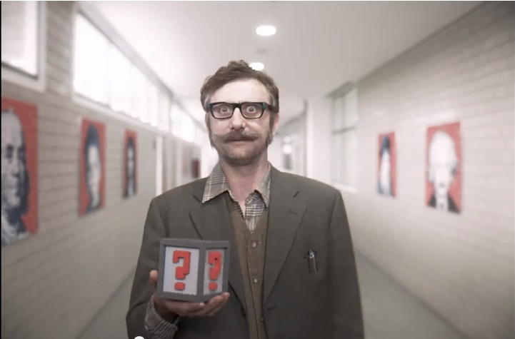
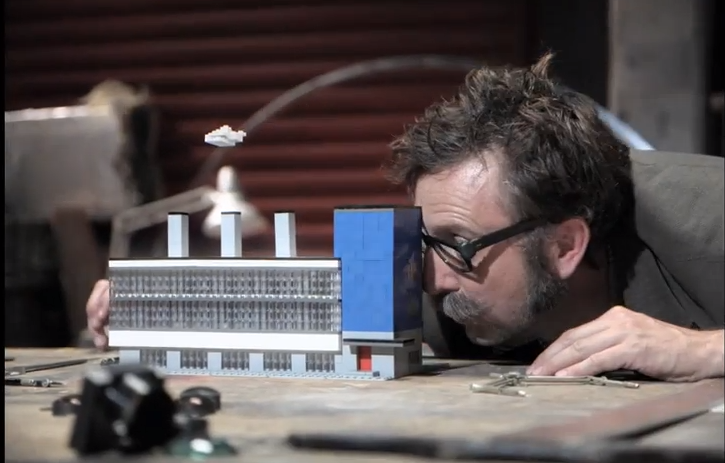
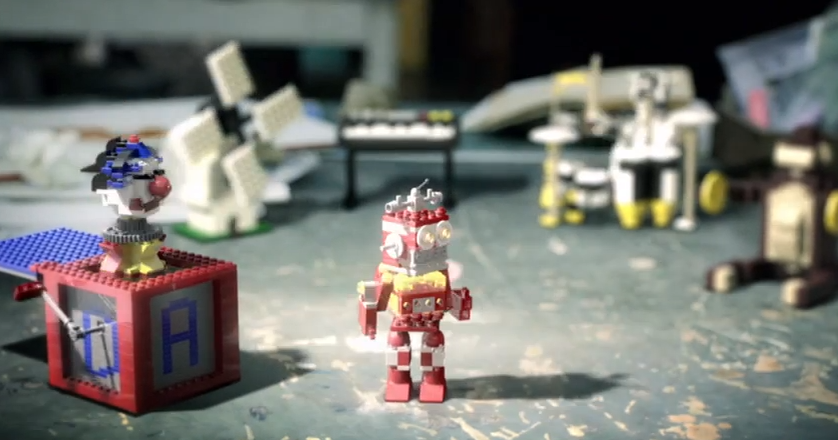

“CL!CK” and “The Brick Thief” by MJZ (2010)
One of the most unique advertisements LEGO has done in recent years was for the launch of LEGO CL!CK—a website highlighting LEGO bricks as part of the creative process. “CL!CK” and its semi-sequel “The Brick Thief” are highly stylized stop-motion films that follow the adventures of a wacky inventor always in need of inspiration.
Story
In “CL!CK”, our wacky inventor (let’s call him Dr. Zacharias Playwell) is trying to invent a way for humans to fly, he gets inspired after a visit to the Idea Factory. In “The Brick Thief” Dr. Playwell steals LEGO bricks from children so he can build a toy rock band and dance.
Both videos serve as charming parables about the creative process. “CL!CK” focuses on the frustration that comes from butting your head up against a problem repeatedly without knowing how to solve it, and the ensuing euphoria when you finally arrive at a solution. In short, it is a story about overcoming writer’s/inventor’s/creator’s block. The concept of the Idea Factory as the place to go to be inspired is a little half-baked (especially when you remember it is also a metaphor for the LEGO CL!CK website), but it serves its purpose.
If “CL!CK” is a story about writer’s block, then “The Brick Thief” is a story about how borrowing/stealing/remixing other people’s ideas is an essential part of the creative process. There’s less of a story arc here; Dr. Playwell doesn’t have what he needs, but then he gets it with little resistance. The stakes may be low, but the message is clear: LEGO is reaffirming it’s core principles as a toy of endless possibilities. It also works as a “so that’s where all the missing socks go” tale.
Design

There is no dialogue in either film aside from Dr. Playwell’s frustrated grunts and jubilant “AHA!”s, so the storytelling is almost entirely visual. Question mark boxes float above Dr. Playwell’s head when he’s stumped, his ideas come to life on paper and in bricks, and his face says all we need to know.
The set design of the laboratory evokes the stop-motion films of Jan Švankmejer. In particular, Dr. Playwell’s wall of tiny doors recalls Svankmejer’s “Alice“. The controlled playfulness of the Ideas Factory brings to the Google campus or the building where LEGO set designers work. Creativity is portrayed simultaneously as messy and personal and as clean and corporate.
The dim, flickery lighting and vignetting makes the films feel like early silent films. This is an appropriate stylistic choice given the lack of dialogue. Makes me wish some one would do a Méliès homage brickfilm.
Animation
The first time I watched “CL!CK” and “The Brick Thief” I was blown away by the animation. I couldn’t believe that they had managed to do such intricate stop-motion of the LEGO models while also stop-animating the human actor. I was right not to believe.

Though it’s not immediately obvious to the untrained eye (or, at least, wasn’t to mine), the animated LEGO bricks in these two films are photo-realistic CGI rather than physical LEGO bricks. The telltale sign is the unnatural sheen of the bricks; they are just a tad too luminous to be real. The CGI was done by a52, which specializes in photo-real visual effects.
I wanted to highlight these films in light of the recent revelations that “The LEGO Movie” will employ a similar style of photo-realistic stop-motionesque CGI (though on a much grander scale). It is an interesting compromise that retains the stop-motion aesthetic while significantly reducing the cost/complexity. It is certainly preferable to the animation style of the Ninjago TV series which gives characters un-LEGO-like flexibility.
All that being said, the animation in “CL!CK” and “The Brick Thief” is inventive and well-executed. Highlights include a rocket turning into shoe then into an exclamation point, a windmill that lets off musical notes, and the puffs of smoke coming out of the Idea factory.
Marius Begai also deserves mention here as the actor behind Dr. Playwell. His animated expressions are delightful and his stop-motion dance moves are enviable. Stop-motion acting is a unique skill, much like being a puppeteer and a puppet at the same time.
Conclusion
“CL!CK” and “The Brick Thief” are different than the average LEGO commercial. They have a unique visual style and rather than selling the latest LEGO set, they have timeless messages about creativity. In this way, they are reminiscent of vintage LEGO commercials. I would love to see more LEGO commercials in this vein. “Build Together” is the only comparable one I can think of from recent years.
However, it’s also important to evaluate these videos in the context of LEGO CL!CK writ large. The LEGO CL!CK website and social media channels are now dormant, only a few years after they launched. They have become more cruft floating in the LEGO digital ocean. My guess is that they were either abandoned so LEGO could focus efforts on ReBrick, or because they were being run by an ad agency and never intended to be long-term. There’s a parallel here to the many YouTubers who used to brickfilm and have either disappeared or turned into video game focused channels.
Even when it was actively updated, the CL!CK website was hard to use. Its Flash-based design means it won’t load on mobile devices. Pieces of content appear as giant teetering stack of LEGO bricks. It looks cool, but it is confusing to navigate. If you know how to find them, there are a few awesome micro-blogs by my illustrious co-editor, but it’s impossible for me to link directly to them. Given the emphasis placed these days on mobile-friendliness and content sharability, the LEGO CL!CK website serves as a stark reminder of how much web design standards have changed over the last few years.
In this sense, the LEGO CL!CK website becomes a parable for another part of the creative process: the idea that didn’t work. Despite winning a bunch of advertising awards, LEGO CL!CK has clearly not been a long-term success for LEGO. One of the things the LEGO Group does well is try out a wide variety of ideas and then focus their resources behind the ones that are successful. This means they have a lot of themes and products that are swiftly abandoned after only a year or two. LEGO CL!CK is another crumpled piece of paper in the great LEGO trash bin next to Galidor, LEGO Universe, and Clikits.
Leave a Reply
You must be logged in to post a comment.